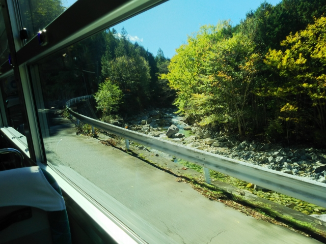
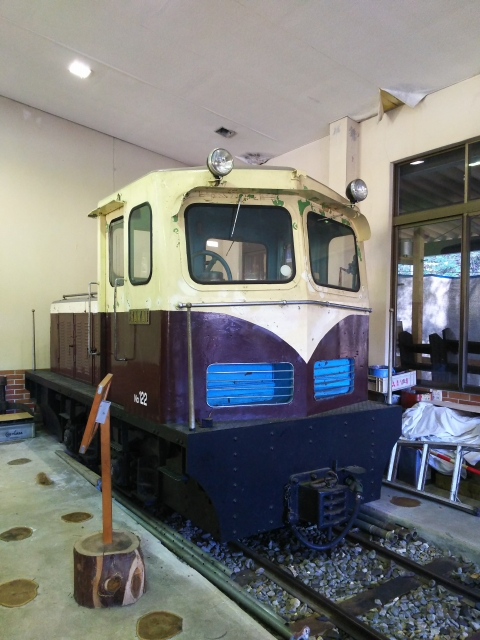

2021（R3）10月22～23日 信州温泉めぐり
皆さん、浦島太郎はどこでおじいさんになったか、ご存知ですか？
早朝の長野駅前です。夜行バスで到着しました。気温が８℃って、寒す
ぎやろ！
しかも、バスの運転が下手なんか、車両が古いんか、よー揺れましたわ。
早く着きすぎたので、時間つぶしに長野電鉄でも乗
ってみますか。
長野電鉄も、東京の元地下鉄車両が進出しとるんか。
地下駅にはお似合いやけど・・・
終点まで行く時間もないので、感じのいい駅で降り
ます。
その名も「あさひ」駅。早朝にぴったりの駅でした。
今年の夏から無人駅になる通知が貼ってたけど、逆
にそんな最近まで駅員が配置されてたことに驚きで
す。

長野駅に戻って来ました。
さて、今回はピンぼけになってるけど、この「秋の乗り放題パス」を使
っての旅でございます。
秋の青春１８とも呼ばれるこの切符、使うのは実は初めてっす。
左側のしなの鉄道の車輛に乗り込みます。１１５系
が健在ですね。
しかしこんな寒いのに、ホームの自動販売機はほと
んど「冷たい」しかなく、売店のおばちゃんに強め
に言ってしまいました。
するとおばちゃんはとても恐縮した感じで、こちら
ホームの売店にはあるかもしれません、と丁寧にし
なのの発車するホームを案内してくれました。
戸倉駅に到着。
おっ、隣に停まってるのは・・・
「ろくもん」やがな。
さて、戸倉で降りたのは、そう、まずは温泉っすよ。
反対側からも。
昭和な案内版がいいっすよね。
駅前の交差点には、こんな建物が！
造り酒屋のようでした。
時間がなくてあせってたのに少し迷って、地元の人
に聞いてやっとみつけた「国民温泉」です。
温泉自体は奥側にあります。
この温泉、湯温がちょうど良く、夜行明けの体には最高でした。
長野電鉄に乗って時間をつぶしてたのは、この温泉が８：４５まで
開かないからです。
しかし開きたてで入ったのに、すでに地元のじじいが３～４人入っ
てて、ちょっと肩身は狭かったです。
さて、戸倉駅に戻って、しなの鉄道で小諸に向かい
ました。
駅前から少し入ると、残ってました！
小諸と言えば、第40作 （昭和63年12月 公開） 「男はつらいよ 寅次郎
サラダ記念日」のロケ地ですよね。
ちょうど寅とおばあさんが会話した場所は、更地になってしまってまし
た。

このおばあさん、名脇役の鈴木光枝さんですが、今
再放送している『マ－姉ちゃん』でも大活躍ですね。
駅から少し歩くと、小諸城の大手門が残ってます。
慶長年間にできた当時のままだそうです。
さて、小諸駅に戻って、ようやく「秋の乗り放題パ
ス」を使える小海線に乗り込みます。
臼田駅に到着。
次の目的地は、ここから２０分ぐらい歩きます。
駅前には、珍しく富士通の看板が！
建物は古いのに、ロゴは新しいっすね。昔は電気屋やったんかな？
２０分ほど歩いて到着。ここか！これか！
そう、日本に２つしかない、五稜郭の一つです。
しかし、かなり小さいので、あえて五稜郭にする意
味あったんかと疑問が・・・。多分新しいもん好き
の領主が調子のってつくらせたんやろなぁ。
「五稜郭 上から見なけりゃ ただの城」でした。
上から見下ろしたかったなぁ。
小諸駅に戻り、乗り継ぎ時間があったので懐古園の
入り口になってる、小諸城の三之門へ。
次のしなの鉄道の列車は新型車両でした。
今はやりの、ロングシートクロスシート転換型の車
輛で、この列車はロングシート運用でした。
乗り心地はいいものの、背もたれが高いので、車窓
はあんまり見えないという欠点が・・・
大屋駅に到着。このスペースは・・・
そう、昭和４４年まで、上田丸子鉄道の駅があった
ところですね。

駅前には大きな桜の木が。春は綺麗やろなぁ。
ここからバスに乗換えます。
途中の「丸子町」のバス停が、昔の丸子町の駅があ
ったところです。
途中のバス停で降りて、歩くこと１５分、霊泉寺温
泉に到着です。
この建物が共同浴場のようです。
期待できそうな雰囲気です。
若干熱めでしたが、いいお湯でした。
入ってる間にひと雨あって、やむまでしばし雨宿り。

なんとか雨があがって、次の温泉へ。
２０分ほど歩いて大塩温泉に到着。って、これは地
区の集会場やないの？

全くひとっけがなかったけど、やってるみたいです。
えらいぬるかったです。霊泉寺温泉と入る順番逆やったわ。
風呂からあがったころにはまた雨。バスの時間までかなりあるので、近くの
鹿教湯温泉のあたりまで１５分ほど歩いて、屋根付きのバス停で上田に戻る
バスの出発を待つことに。
体が冷えてきたわ・・・
昨夜は松本まで戻ってビジネスホテルに泊りました。
朝の松本駅。ちょっと曇ってますね。
構内の端に停車中の松本電鉄はレトロ塗装ですね。
というか、大雨で全線運休中ですわ。復活できるん
やろか・・・
今日はこれから中央線を南下します。
上松駅に到着。
天気はすっかり晴れました。
ホームから山のほうを見ると、これは森林鉄道です
ね。
そう、ここ上松駅は、木曽森林鉄道のあったところで
す。

昭和５０年の５月まで、木曽の木を鉄道で運んでたん
です。
当時の様子はこちら
こんな光景が広がっていたとは、夢のようですね。
昭和５０年代ともなると、行けないことはなかったと
いう悔しさもあります。

ではその森林鉄道のあったところまで行ってみましょ
う！
バスでどんどん飛騨側の山の奥に進んで行きます。
到着したのは赤沢自然休養林。
奥のほうに歩いて行くと・・・
おっ、これは！
木曽森林鉄道名物の理髪車も！
そう、森林鉄道記念館があります。

独特なディーゼル機関車もある！
ボールドウィンも！
右側には・・・
モーター車もある！かわいい。
そうなんです、実はここ、木曽森林鉄道王滝線の一部
区間を保存運行してるんです。
つまり、乗れるんすよ！
やってきました。これですわ。
いよいよ出発です。片道１０分ぐらいの距離を往復します。
結構人気です。ちょっと寒いんやけど、ぜいたく言えません。
終点に到着したら、機回しします。
例年なら紅葉の最盛期のはずが、寒いだけで全然っす
ね。残念。
でも、満足です。
帰りの電車まで時間があるので、近くの名勝の「寝覚
の床」に行きます。
歩いて１５分ぐらいかかりますが、旧中山道を通って
行くと、昔ながらの建物も残ってました。

車窓越しには何度も見ましたが、じっくり近くで見る
のは初めてです。
浦島太郎は竜宮城から玉手箱と弁財天像と万宝神書を
もらって帰り、日本諸国を遍歴したのち、木曽川の風
景の美しい里にたどり着いたそうです。あるとき里人
に竜宮の話をするうち玉手箱を開けてしまって齢300
年の老人になってしまったとさ。
そこが、ここ、寝覚の床とのこと。
知らんかった・・・
得意の鈍行で戻りま～す。
日中の中央西線に乗るのは久々でしたが、山あいの路
線は進む秋の車窓は、良かったっす。